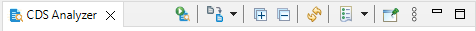
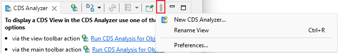

CDS Analyzer
The CDS Analyzer offers the following types of analysis for a
CDS view and/or Database Table/View
To analyze a CDS view (or Database Table/View) perform one of
the following actions:
- via the view toolbar action Run CDS Analysis for
Object ()
- via the main toolbar action Run CDS Analysis for
Object ()
- via the context menu of a CDS or Database Table editor
- via the context menu of a selected CDS View or Database
Table/View in the Project Explorer
- via the context menu of a selected CDS View or Database
Table/View in the Search View (if ABAP Object Search + was used)
General View Options
Toolbar

Toolbar of CDS Analyzer
- Execute new CDS Analysis
- Switch to other analysis type
- Expand all (loaded) nodes
- Collapse all nodes
- Refresh the current Analysis
- Select an already executed Analysis from the history (via
dropdown or dialog)
- Pins the view to prevent new analyses to be opened in the
pinned view
View Menu

View menu of the CDS Analyzer
- Access the preferences to set some default values for each analysis
- Create new instance of the CDS Analyzer View
- Rename the current CDS Analyzer View
Related information